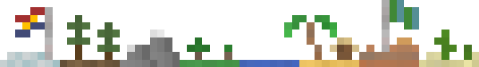
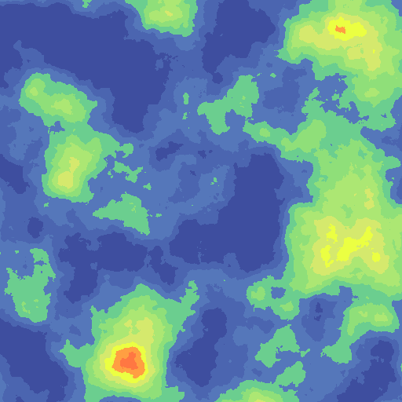

⇠ back
Ymir

"The gods Odin, Vili and Vé fashioned the Earth from Ymir's flesh, from his blood
the ocean, from his bones the hills, from his hair the trees, from his brains the
clouds, from his skull the heavens, and from his eyebrows the middle realm in
which mankind lives, Midgard." (Wikipedia)
Ymir is an experiment in 2d procedural world-generation.
This project is mostly for me to learn, here some goals of mine...
- Learn common procedural generation techniques
- Learn the Go language in and out
- Learn how to write a basic web application
- Learn how to manage a larger project
- Learn how to finish a project
Some planned features are...
- Biome, elevation, political, and climate map views
- Web Server with HTML & CSS front-end and Go backend
- Exporting maps to disk
- Seperate Go package for terrain generation
- Setting menu so generation can be tweaked
It's all currently a work in progress, but development does happen twice a year or so.
Ymir was previously written in Java, but now it uses Go.
I switched to Go both to learn the language and get away from Object-Oriented Programing.
Early examples of maps


Check the source on Github!